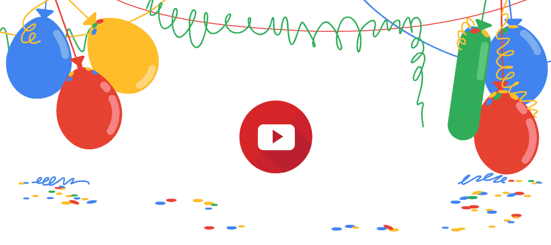

And with that, we're introducing PlayAnywhere. "What is PlayAnywhere", you might ask?
Well.. With PlayAnywhere you can play YouTube, anywhere.
Not just on YouTube.
This is still a betá feature, so it's disabled by default. If you want to take a look, click the button below to go to the (also, new) Settings page and enable the feature.
Note: This startup page is temporary. It is here now to inform you that PlayAnywhere is in beta, and will appear once more when PlayAnywhere goes live. In the next release thereafter, this screen will be removed (once more).